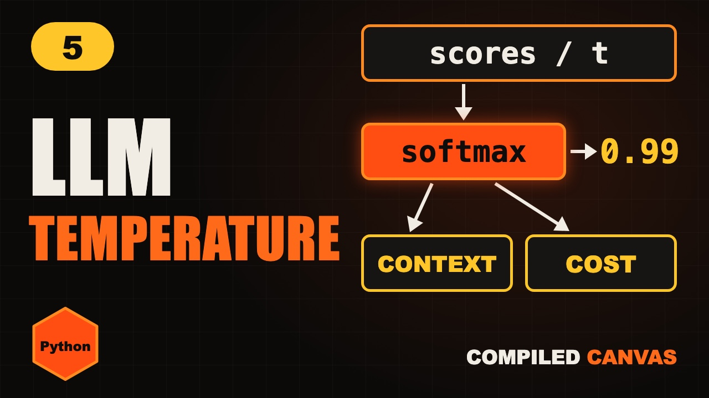

Home / Generative AI / Lesson 5
Lesson 5 · PythonLLM Context Window, Temperature and Cost Explained
LLM temperature, context window, token cost and latency explained simply, with Python code for each one.

1Three problems
Your chatbot forgot what you told it ten minutes ago.
Another time, it gave a wild, random answer to a simple question.
And your API bill doubled overnight. Three settings explain all of this. Context, temperature and cost.
2The context window
The context window is the model's working memory. It's the most tokens it can look at in one go.
Everything counts. Your instructions, every message, every reply, and any documents you paste in.
Sizes range from a few thousand tokens to more than a million in some models.
When a chat gets longer than the window, the oldest messages have to go. That's why it forgot your name.
And bigger isn't free. More context means slower, costlier answers, and models can miss details buried in the middle.
3Trim the history
Type it out yourself, or copy it. It runs with python3 trim.py.
def trim(history, limit):
kept, used = [], 0
for msg in reversed(history):
cost = len(msg.split()) # rough count
if used + cost > limit:
break
kept.append(msg)
used += cost
return list(reversed(kept))
chat = ["hi there", "tell me about java",
"and what about python then"]
print(trim(chat, 9))['tell me about java', 'and what about python then']
Here's how apps keep a chat inside the window. Walk backwards from the newest message.
Count each message, roughly, by its words. Keep adding while there's room.
With a limit of nine, the last two messages fit. Hi there is dropped. Real apps often summarise old messages instead of dropping them.
4Temperature
Temperature controls how random the next token is. Remember the probabilities from softmax?
Low temperature makes the top token even more likely. Answers become focused and repeatable. Use it for code, facts and pulling data out of documents.
High temperature flattens the odds. You get variety and surprise. Good for brainstorming and stories.
Too high, and the answers fall apart into nonsense. That's your wild, random answer.
5Temperature in Python
Type it out yourself, or copy it. It runs with python3 temperature.py.
import numpy as np
scores = np.array([3.0, 2.0, 1.0])
for t in [0.2, 1.0, 2.0]:
p = np.exp(scores / t)
print(t, (p / p.sum()).round(2))
# 0.2 [0.99 0.01 0. ]
# 1.0 [0.67 0.24 0.09]
# 2.0 [0.51 0.31 0.19]0.2 [0.99 0.01 0. ] 1.0 [0.67 0.24 0.09] 2.0 [0.51 0.31 0.19]
Here it is in Python. Divide the scores by the temperature before softmax. That's all temperature is.
At zero point two, the top token gets ninety nine percent.
At one, it's sixty seven, twenty four and nine.
At two, it's fifty one, thirty one and nineteen. Much more spread out.
6How cost is counted
APIs charge by the token, usually per million tokens. Input and output are priced separately.
Output tokens usually cost several times more than input tokens.
Here's the sneaky part. In a chat, the whole history is sent again with every message. So each turn costs more than the last.
That's how a bill doubles overnight. Trim the history, cache what repeats, and pick a smaller model where you can.
7Cost calculator
Type it out yourself, or copy it. It runs with python3 cost.py.
def cost(inp, out, in_price=100, out_price=400):
# rupees per million tokens, example prices only
return inp / 1e6 * in_price + out / 1e6 * out_price
print(cost(2_000, 500)) # 0.4
print(cost(2_000, 500) * 10_000) # 4000.00.4 4000.0
Here's a cost calculator. These prices are made up for the example. Always check your provider's real prices.
One chat turn, with two thousand tokens in and five hundred out, costs forty paise.
Ten thousand users doing that? Four thousand rupees. Small numbers add up fast.
8Latency
Latency is how long you wait. It has two parts.
Time to first token is how long until the answer starts. Tokens per second is how fast it keeps writing.
Streaming shows words as they arrive, so it feels fast. Long prompts, big models and reasoning all make it slower.
Your turn. Pause. You're pulling invoice numbers out of PDFs. Low temperature or high?
Low. You want the same correct answer every single time.
9Cheat sheet
- Context: working memory
- Full: oldest messages go
- Low temp: focused
- High temp: creative
- Pay per token, output more
- History re-sent every turn
10Quick quiz
1. What happens when the chat is longer than the context window?
The oldest messages are dropped or summarised.
2. Extracting data from invoices. Low or high temperature?
Low.
3. Which usually costs more per token, input or output?
Output.
11Homework
Your homework. Run the three Python programs from this lesson. All the Python code is on this page, ready to copy. Then change the temperature to five, and see what happens. And tell me in the comments: what temperature would you use for a story?